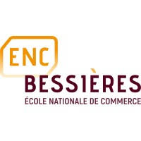
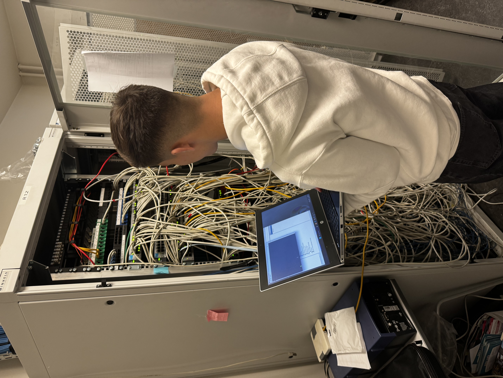
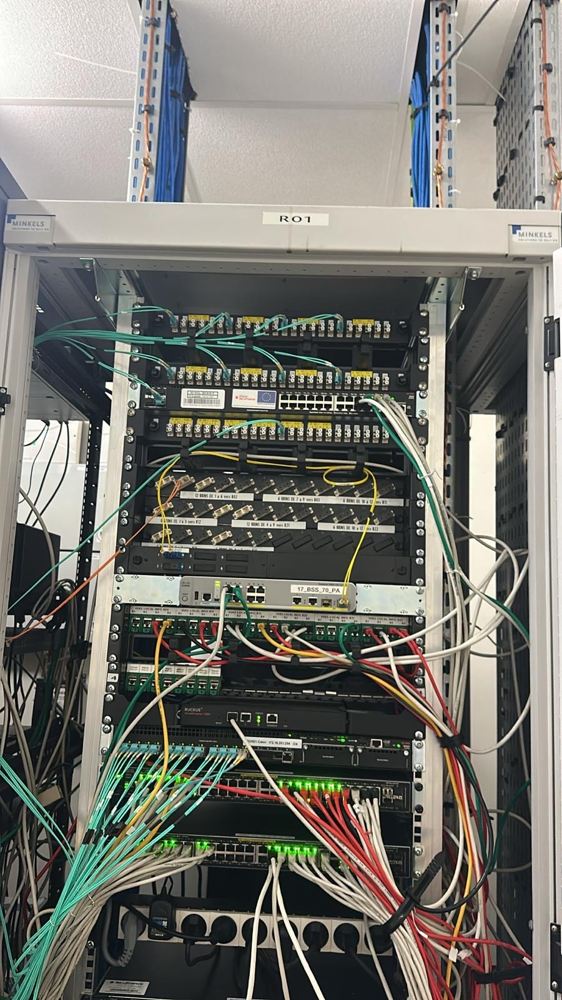
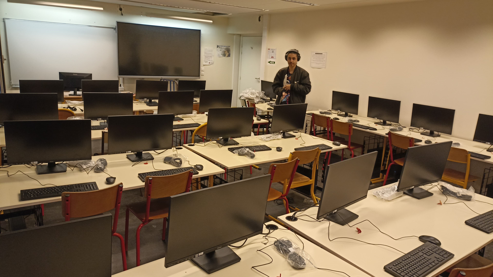
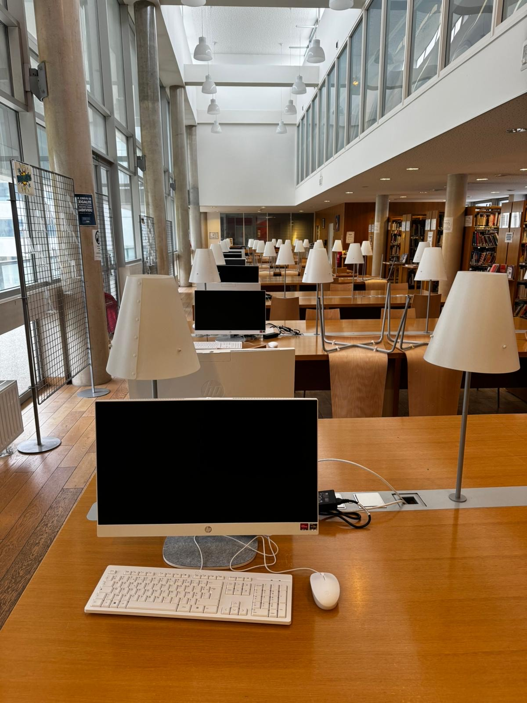
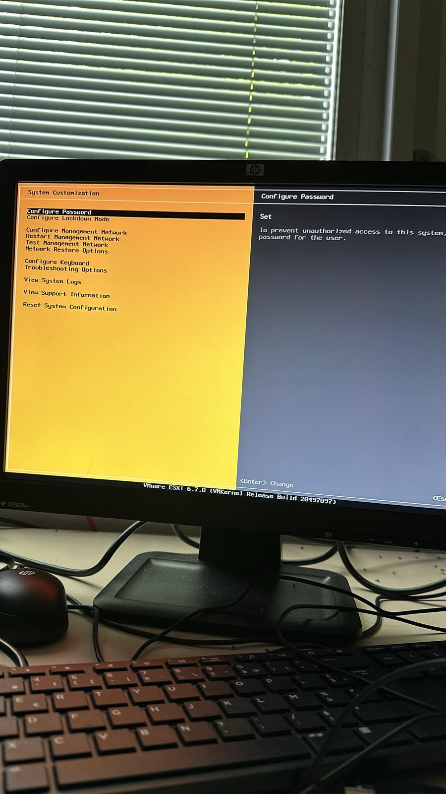
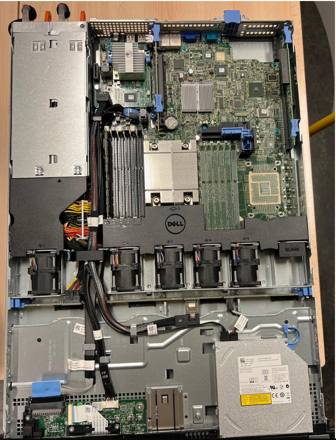

ENC Bessières
Introduction
Présentation de l'École Nationale de Commerce Bessières
J'ai effectué un stage de 8 semaines en tant que technicien support N2 au sein de l'École Nationale de Commerce Bessières.
Ce stage s'est déroulé dans un contexte particulier, car l'établissement était un lieu d'examen, accueillant de nombreux étudiants venus passer leurs épreuves. Mon rôle principal était d'assurer les meilleures conditions pour que les examens puissent se dérouler sans interruption ni problème technique.
Pour cela, j’ai été amené à :
- Installer et configurer des postes de travail pour garantir aux étudiants un matériel fonctionnel et performant.
- Mettre en place et entretenir le réseau en installant des bornes WiFi et en intervenant dans les baies de brassage en cas de problème.
- Assurer un support technique réactif, en intervenant rapidement pour résoudre les incidents matériels ou logiciels rencontrés par les candidats et les professeurs.
- Gérer l’infrastructure informatique de l’établissement, en remplaçant certains équipements vieillissants, notamment en déployant de nouveaux écrans et en intervenant sur les serveurs.
Ce stage m’a permis de développer mes compétences en gestion des infrastructures informatiques, résolution de problèmes réseau et support utilisateur, tout en travaillant dans un environnement sous pression, où la réactivité était essentielle.
Mise en place du réseau
Durant mon stage, j'ai participé à l'installation et à l'optimisation du réseau informatique de l'école, afin d'assurer une connectivité stable et performante pour les étudiants et les enseignants.
- Installation et configuration de bornes WiFi : Déploiement de nouveaux points d'accès WiFi pour couvrir les zones très fréquentées.
- Résolution de problèmes réseau : Diagnostic et dépannage des incidents liés à la connectivité des postes de travail.
- Intervention dans les baies de brassage : Vérification et organisation du câblage réseau.
- Tests et validation : Contrôle du bon fonctionnement des infrastructures réseau après chaque intervention.


Support et dépannage
Lors de mon stage, j’ai joué un rôle clé dans le support technique de l’établissement en assurant une assistance rapide et efficace aux étudiants et aux enseignants.
- Préparation et configuration des postes de travail : Installation et mise à jour des logiciels nécessaires aux épreuves.
- Assistance aux étudiants et enseignants : Intervention en cas de problème technique sur les ordinateurs, imprimantes, etc.
- Dépannage matériel et logiciel : Réparation des pannes courantes.
- Gestion des incidents : Analyse des problèmes signalés et mise en place de solutions.


Gestion d'un parc informatique
Dans le cadre de mon stage, j’ai participé à la gestion et à la modernisation du parc informatique de l’établissement.
- Réception et installation de nouveaux écrans : Remplacement des anciens écrans dans les salles de cours et bureaux.
- Maintenance et mise à niveau des serveurs : Remplacement des CPU sur plusieurs serveurs.
- Installation et configuration de VMware ESXi : Déploiement du logiciel de virtualisation sur les serveurs.
- Organisation et rangement des serveurs en rack : Optimisation de l’espace dans la salle des serveurs.


Conclusion
Ce stage m’a permis d'apprendre beaucoup de choses sur la gestion du réseau et le support technique. J'ai pu voir ce que c'est de travailler dans un environnement où il faut réagir vite pour résoudre des problèmes techniques.
Pendant ces 8 semaines, j’ai dû résoudre des problèmes chaque jour, ce qui m'a permis de mieux comprendre comment les équipements informatiques fonctionnent et comment les maintenir en bon état.
Enfin, ce stage m'a aidé à confirmer que je veux travailler dans le domaine de l'informatique plus tard, car j'ai trouvé cet univers très intéressant et utile, surtout dans un cadre scolaire où la technologie est très importante.